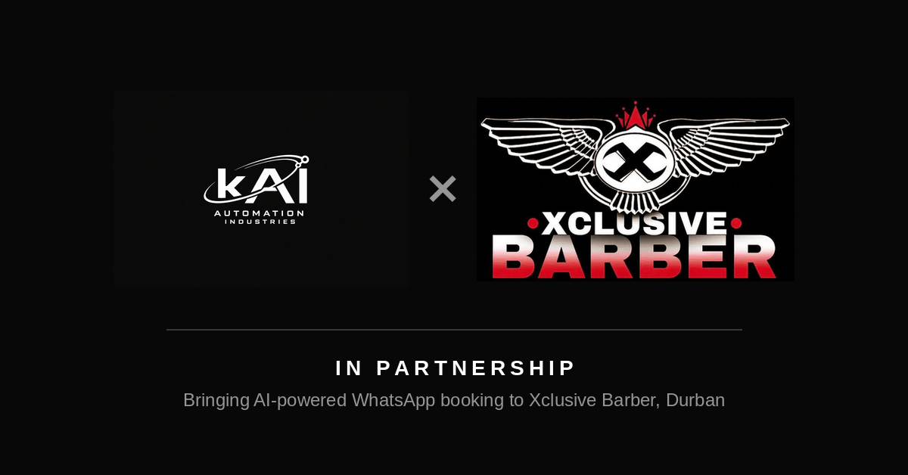
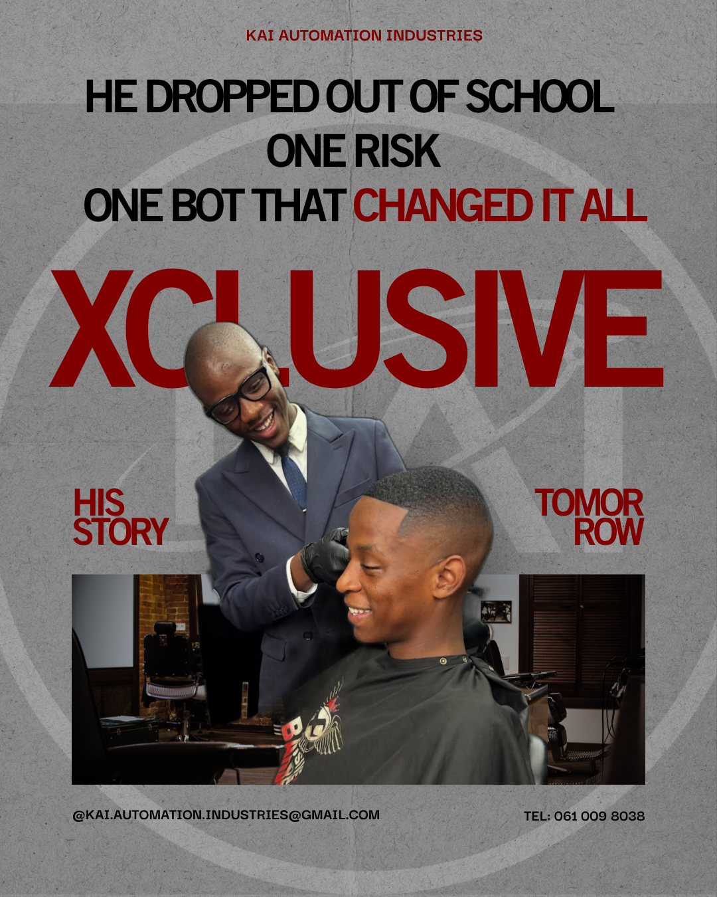
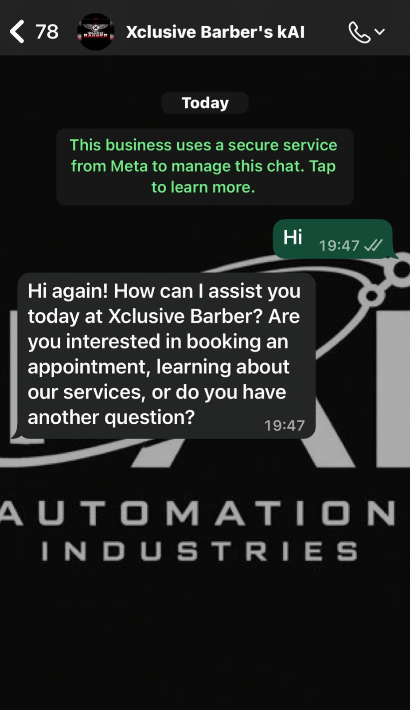

01 · Beauty & grooming
Xclusive Barber
WhatsApp booking automation · Durban
The challenge
Appointments were arranged by hand through calls and back and forth messages, which cost time during busy hours and let bookings slip through the cracks.
What kAI built
A WhatsApp booking bot that lets customers choose a service and a time slot and confirms the appointment automatically.
ResultFirst live kAI deployment
Running on a monthly retainer since launch in June 2026.
“Before kAI would get so many complaints, but now our customer service is top notch.”